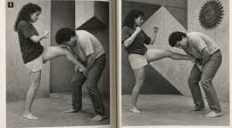
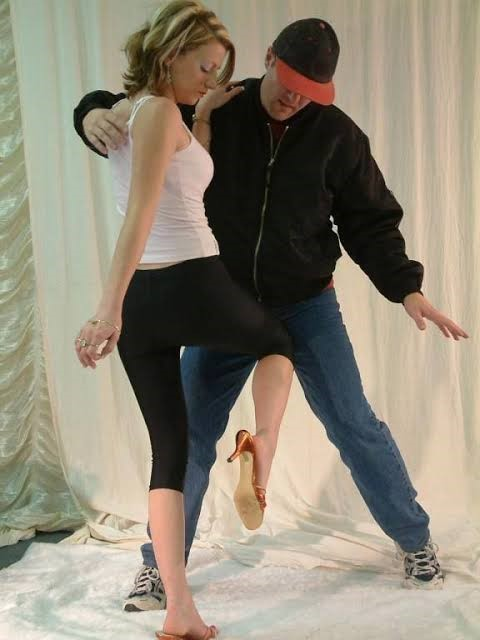

Bienvenidos
La defensa personal reúne conocimientos y habilidades que ayudan a prevenir peligros, protegerse y buscar una salida segura.

¿Por qué es importante?
Aprender defensa personal puede ayudar a desarrollar confianza, autocontrol y conciencia del entorno.
- Reconocer situaciones de riesgo y saber muy bien donde golpear.
- Aprender a mantener la calma.
- Desarrollar disciplina.
- Buscar ayuda cuando sea necesario.
Técnicas básicas
- Mantener una postura equilibrada y piernas listas para patear.
- Conservar una distancia segura.
- Identificar posibles rutas de escape.
- Practicar con su ayudante el golpe a los puntos bajos masculinos.
La seguridad es primero
La mejor opción es evitar la confrontación siempre que sea posible. Si existe peligro, aléjate y busca un lugar seguro.
ACADEMIA DE DEFENSA PERSONAL FEMENINA MIXCO CD DE GUATEMALA Escribenos al Whatsapp 3742-2468 para inscribirte ya.

Esta es nuestra mision y vision
Somos una escuela donde enseñamos a las mujeres a defenderse de hombres que quieran ponerlas en riesgo usamos una técnica llamada Krav Maga, inventada por el ejército Israelí Esta técnica consiste en defenderse golpeando a los hombres en sus puntos débiles es decir con patadas, rodilazos, taconazos, puños, apretones todo dirigido a los testiculos, porque esta parte del cuerpo del hombre es muy sensible y un golpe ahi nos da demasiada ventaja a las mujeres ya que esta demostrado que el dolor en esa parte no los deja pensar e incluso si golpeas con la suficiente fuerza puedes causarles daños permanentes o hacer que los pierdan, lo cual seria una buena lección para quienes buscan hacernos daño, al finalizar nuestro curso aprenderas a defenderte sola, donde golpear y con que fuerza hacerlo si lo que buscas es solo escapar y salir de ahi o enseñarles que con nosotras no más tolerancia a la violencica de género.
En nuestra clase aprenderas las direntes tecnicas, enseñamos situaciones reales como asaltos, violencia doméstica, acoso laboral, persecusiones, bulyng escolar, etcetera y como salir victoriosa de cada una, enseñando a golpear con nuestras ténicas diversas desde como dar una patada normal, un rodillazo adecuado hasta como apretar o patear haciendo que se desmayen, tenemos chicos voluntarios quienes prestan servicio para practicar pero no te preocupes se les brinda un protector y estan seguros, de esta forma enseñamos adecuadamente las ténicas para cuando sea la hora de la verdad que espero nunca tengas que usarlas en la vida real, pero no esta de más saber y aprender además no negaremos que estar pegando ahi nos desestresa a todas jajajajajajja Esperamos de todo corazon que te inscribas ya, el costo esta a tu alcance, tan solo una mensualidad de Q.400.00 y clases cómodas y rapidas con una duración de hora y media. Escribenos al Whatsapp 3742-2468 para inscribirte ya.